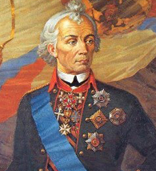

Суворов Александр Васильевич |
||
Навигация |
Суворов Александр Васильевич |
Любовь к отчизне |
|
За всю свою военную карьеру генералиссимус Александр Суворов не проиграл ни одного крупного сражения. На его счету участие в семи военных кампаниях, среди которых подавление Польского восстания, войны против Оттоманской империи и революционной Франции. Именно войска Суворова взяли неприступную турецкую крепость Измаил в 1790 году и разгромили превосходящие их силы французов в битве при Треббии в 1799 году. Основой военной стратегии Суворова были «глазомер, быстрота и натиск» — правильно оценив обстановку и найдя его слабые места, он бил быстро и неожиданно, не обращая внимания на численность противника. В этом он отличался от большинства военачальников своей эпохи (вторая половина 18-го века), предпочитавших действовать от обороны и наступать, только обладая численным преимуществом. Русский полководец придерживался другого правила — «бей не числом, а умением».  Александр Суворов сокрушил немало французских военачальников и пользовался у врага неподдельным уважением. Генерал Андре Массена говорил, что отдал бы все свои победы за один Швейцарский поход Суворова, а Жан Виктор Моро называл его марш к Треббии вершиной военного искусства. С восхищением о генералиссимусе высказывался и Наполеон, утверждая однако, что тот обладал сердцем, но не разумом великого полководца. Возможности переубедить будущего властителя Европы Суворову, однако, не представилось — они так никогда и не встретились на поле боя. |
Поле Куликово славою покрыто. Суворов чистою любовью К своей Отчизне век пылал, И, жертвуя именьем, кровью, Ее врагов он поражал: Его поляки трепетали, Французы с турками дрожали. Повсюду завсегда с тобой Любовь к Отчизне, россиянин, А с нею, с ней велик граждАнин, Ужасный для врагов герой. |
|
|
IT-CUBE г.Балашова HTML , CSS |
||